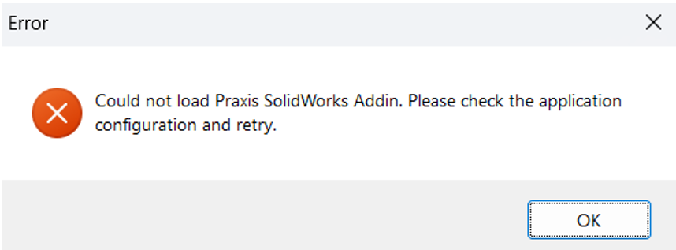
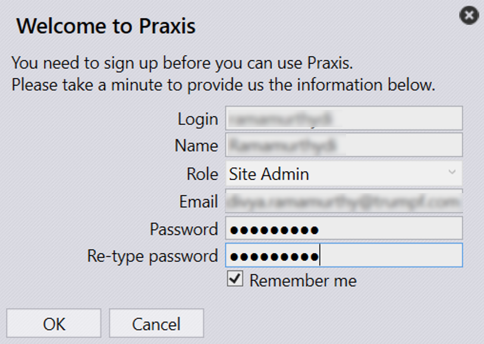

安裝
|
必要需求
首次啟動 SolidWorks 時，必須登入 TruSmartCAM 桌面應用程式。 確保 TruSmartCAM 監視器正在 Windows 通知區域中執行。 如果 TruSmartCAM 桌面應用程式未開啟，請驗證 TruSmartCAM 伺服器服務是否正在執行，以允許 SolidWorks 增益集運作。如果兩者都處於非作用中狀態，SolidWorks 將在啟動時顯示錯誤訊息。  |
請依照以下步驟安裝和設定 SolidWorks 的 TruSmartCAM 增益集：
-
執行 TruSmartCAM 安裝程式，在「元件選擇」頁面上，啟用 SolidWorks Extension。（如果 SolidWorks 安裝在 TruSmartCAM 用戶端上，請略過伺服器選項。）

-
完成安裝後，啟動 TruSmartCAM 桌面應用程式並使用有效的使用者憑證登入。

-
啟動 SolidWorks。

-
在 SolidWorks 中，前往 Tools → TruSmartCAM → About TruSmartCAM，以驗證增益集版本和詳細資訊。

-
若要在啟動時啟用或停用增益集，請前往 Tools → Add-ins，並在 Other Add-ins 下找到 TruSmartCAM。